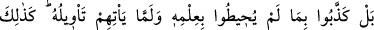
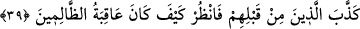
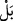

dilini bağlamak sûretiyle onları Kur’an’a karşı koymaktan âciz bırakmaz. Molla
Fenârî’nin Tefsîru’l-Fâtiha’sında böyle geçmektedir.
39. Hayır, onlar bilgisini kavrayamadıkları, henüz yorumu da kendilerine
bildirilmemiş olan şeyi yalanladılar. Onlardan öncekiler de böyle yalanlamışlardı.
Bak, o zâlimlerin sonu nice oldu?!
“Hayır, onlar bilgisini kavrayamadıkları, henüz yorumu da kendilerine
bildirilmemiş olan şeyi yalanladılar.” Yâni daha ne olduğunu anlamadan alelacele
Kur’ân’ı yalanlamaya koştular. Çünkü, bir sözü mânâlarını kavramadan yalanlamak, ilk
anda inkâra koşmak demektir. “” lâfzında müşrikleri taklitçilikleri ve iyice
düşünmemeleri yüzünden kötüleme mânâsı vardır. Sanki şöyle denilmiş oluyor: Bırak
onlara meydan okuyup delille susturmayı! Çünkü onlar, hitâp edilmeye lâyık değillerdir.
Çünkü taklitçidirler ve bu konuda akılları karışıktır. Şayet Kur’ân’daki pek çok i’câz
örneklerine vâkıf olsalardı, elbette onun bir mahlûkun nazire getirebileceği şeylerden
olmadığını anlarlardı.
Demek ki Kur’ân gerek nazım gerek mânâ ve gerekse gaybdan haber vermesi
yönünden âciz bırakıcıdır. Müşrikler ise Kur’ân’ın nazmı üzerinde iyice düşünmeden,
bâzısı dünyada, bâzısı da âhirette ortaya çıkacak istikbâle dâir verdiği haberlerin
meydana gelmesini beklemeden alelacele Kur’ân’ı yalanlayıverdiler. Halbuki bu gibi
haberlerin gerçekleşmesini bekleselerdi, hem Kur’an’ın sahîh olduğunu, hem de Hz.
Peygamber (s.a.)’in sözlerinin doğru olduğunu kesin olarak anlayacaklardı.
Gelmesi beklenen bir şeyin daha ne olduğunu bilmeden yalanlayıvermek, onunla ilgili
hiç bilgi sâhibi olmadan yalanlayıvermekten daha çirkindir. Şu halde müşriklere düşen,
beklenen şeyin meydana geleceği zamana kadar durup beklemekti, ama onlar bunu
yapmadılar.
“Onlardan öncekiler de” peygamberlerini “böyle” yani senin kavminin yalanladığı
gibi “yalanlamışlardı. Bak, o zâlimlerin sonu nice oldu?!” Bu ifâdede, müşrikler
kendilerinden öncekilerin dûçâr oldukları azâba benzer bir azâbla tehdid edilmektedir.
Burada Allah Teâlâ, önceki yalanlayıcıları, “zâlim” diye niteliyor. Çünkü tasdik
edecekleri yerde yalanlamışlardır. Yalanlayınca da âkıbetleri kitapların ve
peygamberlerin haber verdiği azâb ve helâk olmuştur.